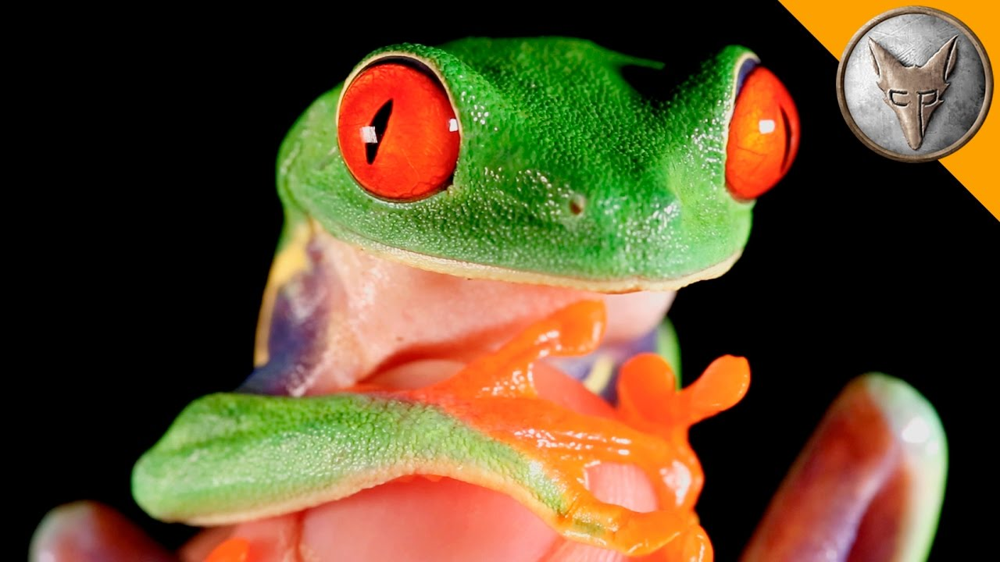
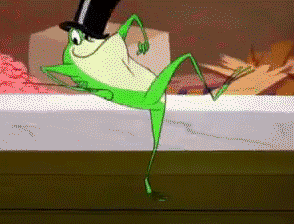

🐸 Frog Website 🐸
✨ FROG VIDEOS ✨
✨ FROG NEWS ✨
✨ FROG PICS ✨
✨ FROG FACTS ✨
Cartoon Frog
Kermit the Frog

World's Most Famous Frog
Pepe The Frog
Cheeze It Frog

Frogs have ears. Male frogs have bigger ears than females. Their ears are just behind their eyes.
Frogs ‘drink’ through their skin.
There isn’t actually a biological difference between frogs and toads. Toads are just very warty frogs.
Flying frogs can glide for 12 to 15 metres, as they have extremely effective webbed feet.
A frog completely sheds its skin about once a week. After it pulls off the old, dead skin, the frog usually eats it.
When a frog swallows its prey, it blinks, which pushes its eyeballs down on top of the mouth to help push the food down its throat.
CLICK HERE TO LEARN MORE ABOUT FROGS!!!